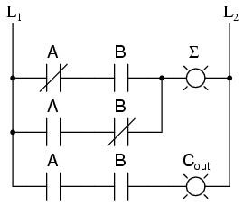
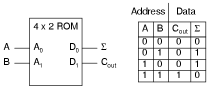
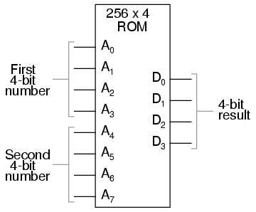
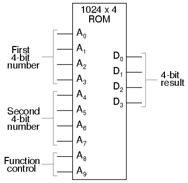
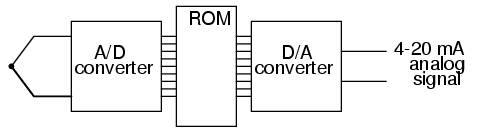
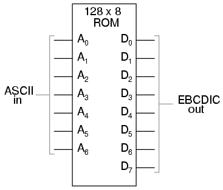
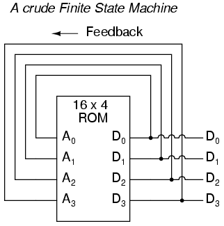
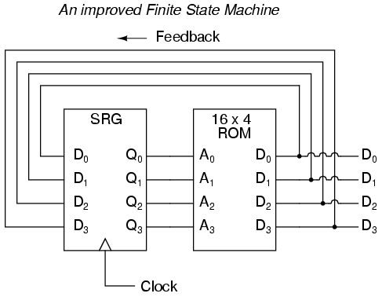
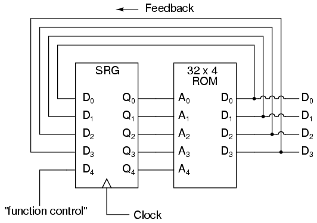
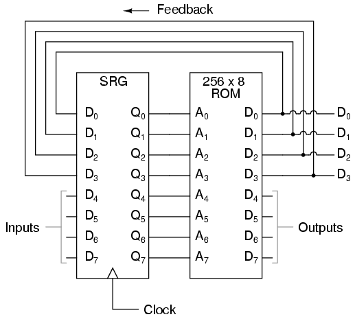

Principios de Computación Digital
Un sumador binario
Supongamos que quisiéramos construir un dispositivo que pudiera sumar dos bits binarios. Un dispositivo de este tipo se conoce como medio sumador y su circuito de compuerta se ve así:

El símbolo Σ representa la salida de "suma" del semisumador, el bit menos significativo (LSB) de la suma. dooutrepresenta la salida de "acarreo" del semisumador, el bit más significativo de la suma (MSB).
Si tuviéramos que implementar esta misma función en lógica de escalera (relé), se vería así:

Cualquiera de los circuitos es capaz de sumar dos dígitos binarios. Las "reglas" matemáticas sobre cómo sumar bits son intrínsecas a la lógica cableada de los circuitos. Si quisiéramos realizar una operación aritmética diferente con bits binarios, como la multiplicación, tendríamos que construir otro circuito. Los diseños de circuitos anteriores solo realizarán una función: sumar dos bits binarios. Para obligarlos a hacer otra cosa sería necesario volver a cablear y tal vez componentes diferentes.
En este sentido, los circuitos aritméticos digitales no son muy diferentes de los circuitos aritméticos analógicos (amplificadores operacionales): hacen exactamente lo que están programados para hacer, ni más ni menos. Sin embargo, no nos limitamos a diseñar circuitos informáticos digitales de esta manera. Es posible incorporar las "reglas" matemáticas para cualquier operación aritmética en forma de datos digitales en lugar de conexiones cableadas entre puertas. El resultado es una flexibilidad de funcionamiento incomparable, dando lugar a un tipo completamente nuevo de dispositivo digital: elcomputadora programable.
Si bien este capítulo no es de ninguna manera exhaustivo, proporciona lo que creo que es una mirada única e interesante a la naturaleza de los dispositivos informáticos programables, comenzando con dos dispositivos que a menudo se pasan por alto en los libros de texto introductorios:memorias de la tabla de consulta and máquinas de estados finitos.
Look-up tables
Habiendo aprendido sobre los dispositivos de memoria digital en el último capítulo, sabemos que es posible almacenar datos binarios dentro de dispositivos de estado sólido. Esas "celdas" de almacenamiento dentro de los dispositivos de memoria de estado sólido se pueden acceder fácilmente al controlar las líneas de "dirección" del dispositivo con los valores binarios adecuados. Supongamos que tuviéramos un circuito de memoria ROM escrito o programado con ciertos datos, de modo que las líneas de dirección de la ROM sirvieran como entradas y las líneas de datos de la ROM sirvieran como salidas, generando la respuesta característica de una función lógica particular. Teóricamente, podríamos programar este chip ROM para emular cualquier función lógica que quisiéramos sin tener que alterar ninguna conexión de cables o puertas.
Considere el siguiente ejemplo de una memoria ROM de 4 x 2 bits (¡una memoria muy pequeña!) programada con la funcionalidad de un medio sumador:

Si esta ROM se ha escrito con los datos anteriores (que representan la tabla de verdad de un medio sumador), activar las entradas de direcciones A y B hará que se habiliten las respectivas celdas de memoria en el chip ROM, generando así los datos correspondientes como Σ (Suma) y C.outbits. A diferencia del circuito de medio sumador construido con puertas o relés, este dispositivo se puede configurar para realizar cualquier función lógica con dos entradas y dos salidas, no solo la función de medio sumador. Para cambiar la función lógica, todo lo que tendríamos que hacer es escribir una tabla de datos diferente en otro chip ROM. Incluso podríamos usar un chip EPROM que podría reescribirse a voluntad, brindando la máxima flexibilidad de funcionamiento.
Es de vital importancia reconocer la importancia de este principio aplicado a los circuitos digitales. Mientras que el medio sumador construido a partir de puertas o relésprocesoslos bits de entrada para llegar a una salida específica, la ROM simplementerecuerdacuáles deberían ser las salidas para cualquier combinación dada de entradas. Esto no es muy diferente de las "tablas de multiplicar" memorizadas en la escuela primaria: en lugar de tener que calcular el producto de 5 por 6 (5 + 5 + 5 + 5 + 5 + 5 = 30), a los niños se les enseña a recordar que 5 x 6 = 30, y luego se espera que recuerden este producto de memoria según sea necesario. Del mismo modo, en lugar de que la función lógica dependa de la disposición funcional de puertas o relés cableados (hardware), depende únicamente de los datos escritos en la memoria (software).
Una aplicación tan simple, con salidas definidas para cada entrada, se llamatabla de consulta, porque el dispositivo de memoria simplemente "busca" cuáles deberían ser las salidas para cualquier combinación dada de estados de entrada.
Esta aplicación de un dispositivo de memoria para realizar funciones lógicas es importante por varias razones:
- El software es mucho más fácil de cambiar que el hardware.
- El software se puede archivar en varios tipos de medios de memoria (disco, cinta), lo que proporciona una forma sencilla de documentar y manipular la función en forma "virtual"; El hardware sólo puede "archivarse" de forma abstracta en forma de algún tipo de dibujo gráfico.
- El software se puede copiar de un dispositivo de memoria (como el chip EPROM) a otro, lo que permite que un dispositivo "aprenda" su función de otro dispositivo.
- Se puede diseñar software como el ejemplo de función lógica para realizar funciones que serían extremadamente difíciles de emular con puertas lógicas discretas (¡o relés!).
La utilidad de una tabla de consulta se vuelve cada vez más evidente a medida que aumenta la complejidad de la función. Supongamos que queremos construir un circuito sumador de 4 bits usando una ROM. Necesitaríamos una ROM con 8 líneas de dirección (para sumar dos números de 4 bits), más 4 líneas de datos (para la salida firmada):

Con 256 ubicaciones de memoria direccionables en este chip ROM, tendríamos que hacer una buena cantidad de programación, diciéndole qué salida binaria generar para todas y cada una de las combinaciones de entradas binarias. También correríamos el riesgo de cometer un error en nuestra programación y que arrojara una suma incorrecta, si no tuviéramos cuidado. Sin embargo, la flexibilidad de poder configurar esta función (o cualquier función) solo a través del software generalmente supera esos costos.
Considere algunas de las funciones avanzadas que podríamos implementar con el "sumador" anterior. Sabemos que cuando sumamos dos conjuntos de números en notación con signo en complemento a 2, corremos el riesgo de que la respuesta se desborde. Por ejemplo, si intentamos sumar 0111 (7 decimal) a 0110 (6 decimal) con solo un campo numérico de 4 bits, la respuesta que obtendremos es 1001 (-7 decimal) en lugar del valor correcto, 13 (7 + 6), que no se puede expresar usando 4 bits con signo. Si quisiéramos, podríamos evitar las respuestas extrañas dadas en condiciones de desbordamiento programando este circuito de tabla de búsqueda para generar algo más en condiciones en las que sabemos que se producirá un desbordamiento (es decir, en cualquier caso donde la suma real excedería +7 o -8). Una alternativa podría ser programar la ROM para que genere la cantidad 0111 (el valor positivo máximo que se puede representar con 4 bits con signo), o cualquier otro valor que determinemos que es más apropiado para la aplicación que el típico valor de "error" desbordado que generaría un circuito sumador normal. Depende del programador decidir qué quiere que haga este circuito, porque ya no estamos limitados por las limitaciones de las funciones de puerta lógica.
Las posibilidades tampoco se limitan a funciones lógicas personalizadas. Al agregar más líneas de dirección al chip ROM de 256 x 4, podemos expandir la tabla de búsqueda para incluir múltiples funciones:

Con dos líneas de dirección más, el chip ROM tendrá 4 veces más direcciones que antes (1024 en lugar de 256). Esta ROM podría programarse para que cuando A8 y A9 estuvieran bajos, los datos de salida representaran elsumde los dos números binarios de 4 bits ingresados en las líneas de dirección A0 a A7, tal como lo hicimos con el circuito ROM de 256 x 4 anterior. Para las direcciones A8=1 y A9=0, se podría programar para generar la salidadiferencia(resta) entre el primer número binario de 4 bits (A0 a A3) y el segundo número binario (A4 a A7). Para las direcciones A8=0 y A9=1, podríamos programar la ROM para generar la diferencia (resta) de los dos números en orden inverso (segundo - primero en lugar de primero - segundo) y, finalmente, para las direcciones A8=1 y A9=1, la ROM podría programarse para comparar las dos entradas y generar una indicación de igualdad o desigualdad. Lo que tendremos entonces es un dispositivo que puede realizar cuatro operaciones aritméticas diferentes con números binarios de 4 bits, todo ello "buscando" las respuestas programadas en él.
Si hubiéramos usado un chip ROM con más de dos líneas de dirección adicionales, podríamos programarlo con una variedad más amplia de funciones para realizar en las dos entradas de 4 bits. Hay una serie de operaciones peculiares de los datos binarios (como la verificación de paridad o la operación OR exclusiva de bits) que podría resultar útil programar en dicha tabla de consulta.
Dispositivos como este, que pueden realizar una variedad de tareas aritméticas dictadas por un código de entrada binario, se conocen comoUnidades aritméticas lógicas(ALU), y constituyen uno de los componentes esenciales de la tecnología informática. Aunque las ALU modernas suelen construirse a partir de circuitos lógicos combinacionales (de puerta) muy complejos por razones de velocidad, debería ser reconfortante saber que exactamente la misma funcionalidad se puede duplicar con un chip ROM "tonto" programado con las tablas de consulta adecuadas. De hecho, los ingenieros de IBM utilizaron este enfoque exacto en 1959 con el desarrollo de las computadoras IBM 1401 y 1620, que utilizaban tablas de búsqueda para realizar la suma, en lugar de circuitos sumadores binarios. La máquina era conocida cariñosamente como "CADET", que significaba "ChormigaAdd, Dno esEven Try."
Una aplicación muy común para las ROM de tablas de consulta es en los sistemas de control donde es necesario representar una función matemática personalizada. Esta aplicación se encuentra en sistemas de inyección de combustible controlados por computadora para motores de automóviles, donde la relación adecuada de mezcla de aire/combustible para un funcionamiento eficiente y limpio cambia con varias variables ambientales y operativas. Las pruebas realizadas en motores en laboratorios de investigación determinan cuáles son estas relaciones ideales para diferentes condiciones de carga del motor, temperatura del aire ambiente y presión del aire barométrica. Las variables se miden con transductores de sensores, sus salidas analógicas se convierten en señales digitales con circuitos A/D y esas señales digitales paralelas se utilizan como entradas de dirección a un chip ROM de alta capacidad programado para generar el valor digital óptimo de la relación aire/combustible para cualquiera de estas condiciones dadas.
A veces, las ROM se utilizan para proporcionar funciones de tabla de búsqueda unidimensional, para "corregir" valores de señales digitalizadas para que representen con mayor precisión su importancia en el mundo real. Un ejemplo de tal dispositivo es untransmisor de termopar, que mide la señal de milivoltaje generada por una unión de metales diferentes y emite una señal que se supone quedirectamentecorresponde a esa temperatura de unión. Desafortunadamente, las uniones de termopares no tienen respuestas de temperatura/voltaje perfectamente lineales, por lo que la señal de voltaje sin procesar no es perfectamente proporcional a la temperatura. Al digitalizar la señal de voltaje (conversión A/D) y enviar ese valor digital a la dirección de una ROM programada con los valores de corrección necesarios, la programación de la ROM podría eliminar parte de la no linealidad de la relación temperatura-milivoltaje del termopar, de modo que la salida final del dispositivo sería más precisa. El término de instrumentación popular para dicha tabla de consulta es digital.caracterizador.

Otra aplicación para tablas de consulta es la traducción de códigos especiales. Por ejemplo, se podría utilizar una ROM de 128 x 8 para traducir código ASCII de 7 bits a código EBCDIC de 8 bits:

Nuevamente, todo lo que se requiere es que el chip ROM esté correctamente programado con los datos necesarios para que cada entrada ASCII válida produzca un código de salida EBCDIC correspondiente.
Máquinas de estados finitos
La retroalimentación es un principio de ingeniería fascinante. Puede convertir un dispositivo o proceso bastante simple en algo sustancialmente más complejo. Hemos visto los efectos de la retroalimentación integrada intencionalmente en diseños de circuitos con algunos efectos bastante sorprendentes:
- Comparador + retroalimentación negativa -----------> amplificador de ganancia controlable
- Comparador + retroalimentación positiva -----------> comparador con histéresis
- Lógica combinacional + retroalimentación positiva --> multivibrador
En el campo de la instrumentación de procesos, la retroalimentación se utiliza para transformar un simple sistema de medición en algo capaz de controlar:
- Sistema de medición + retroalimentación negativa ---> sistema de control de circuito cerrado
La retroalimentación, tanto positiva como negativa, tiende a agregar dinámicas completamente nuevas al funcionamiento de un dispositivo o sistema. A veces, estas nuevas dinámicas encuentran aplicaciones útiles, mientras que otras veces son simplemente interesantes. Con las tablas de consulta programadas en dispositivos de memoria, la retroalimentación de las salidas de datos a las entradas de direcciones crea un tipo completamente nuevo de dispositivo: elMáquina de estados finitos, oFSM:

El circuito anterior ilustra la idea básica: los datos almacenados en cada dirección se convierten en la siguiente ubicación de almacenamiento a la que se dirige la ROM. El resultado es una secuencia específica de números binarios (siguiendo la secuencia programada en la ROM) en la salida, a lo largo del tiempo. Sin embargo, para evitar problemas de sincronización de la señal, necesitamos volver a conectar las salidas de datos a las entradas de dirección a través de un flip-flop tipo D de 4 bits, de modo que la secuencia se realice paso a paso al ritmo de un pulso de reloj controlado:

Una analogía para el funcionamiento de dicho dispositivo podría ser una serie de apartados de correos, cada uno con un número de identificación en la puerta (la dirección), y cada uno con una hoja de papel con la dirección de otro apartado postal. cuadro escrito en él (los datos). Una persona, abriendo el primer P.O. casilla, encontraría en ella la dirección del siguiente apartado de correos. caja para abrir. Al almacenar un patrón particular de direcciones en el P.O. cajas, podemos dictar la secuencia en la que se abre cada caja y, por lo tanto, la secuencia en la que se lee el papel.
Al tener 16 ubicaciones de memoria direccionables en la ROM, esta máquina de estados finitos tendría 16 "estados" estables diferentes en los que podría engancharse. En cada uno de esos estados, la identidad del siguiente estado se programaría en la ROM, esperando que la señal del siguiente pulso de reloj se devuelva a la ROM como una dirección. Una aplicación útil de dicho FSM sería generar una secuencia de conteo arbitraria, como el Código Gray:
Address -----> Data Gray Code count sequence: 0000 -------> 0001 0 0000 0001 -------> 0011 1 0001 0010 -------> 0110 2 0011 0011 -------> 0010 3 0010 0100 -------> 1100 4 0110 0101 -------> 0100 5 0111 0110 -------> 0111 6 0101 0111 -------> 0101 7 0100 1000 -------> 0000 8 1100 1001 -------> 1000 9 1101 1010 -------> 1011 10 1111 1011 -------> 1001 11 1110 1100 -------> 1101 12 1010 1101 -------> 1111 13 1011 1110 -------> 1010 14 1001 1111 -------> 1110 15 1000
Intente seguir la secuencia de conteo del Código Gray como lo haría el FSM: comenzando en 0000, siga los datos almacenados en esa dirección (0001) hasta la siguiente dirección, y así sucesivamente (0011), y así sucesivamente (0010), y así sucesivamente (0110), etc. El resultado, para la tabla de programa que se muestra, es que la secuencia de direccionamiento salta de una dirección a otra de una manera que parece desordenada, pero cuando verifica cada dirección a la que se accede, Encontrará que sigue el orden correcto para el código Gray de 4 bits. Cuando el FSM llega a su último estado programado (dirección 1000), los datos almacenados allí son 0000, lo que inicia toda la secuencia nuevamente en la dirección 0000 en el paso con el siguiente pulso de reloj.
Podríamos ampliar las capacidades del circuito anterior usando una ROM con más líneas de dirección y agregando más datos de programación:

Ahora, al igual que el circuito sumador de tabla de búsqueda que convertimos en una unidad aritmética lógica (funciones +, -, x, /) al utilizar más líneas de dirección como entradas de "control de función", este contador FSM se puede usar para generar más de una secuencia de conteo, una secuencia diferente programada para los cuatro bits de retroalimentación (A0 a A3) para cada una de las dos combinaciones de entrada de línea de control de función (A4 = 0 o 1).
Address -----> Data Address -----> Data 00000 -------> 0001 10000 -------> 0001 00001 -------> 0010 10001 -------> 0011 00010 -------> 0011 10010 -------> 0110 00011 -------> 0100 10011 -------> 0010 00100 -------> 0101 10100 -------> 1100 00101 -------> 0110 10101 -------> 0100 00110 -------> 0111 10110 -------> 0111 00111 -------> 1000 10111 -------> 0101 01000 -------> 1001 11000 -------> 0000 01001 -------> 1010 11001 -------> 1000 01010 -------> 1011 11010 -------> 1011 01011 -------> 1100 11011 -------> 1001 01100 -------> 1101 11100 -------> 1101 01101 -------> 1110 11101 -------> 1111 01110 -------> 1111 11110 -------> 1010 01111 -------> 0000 11111 -------> 1110
Si A4 es 0, el FSM cuenta en binario; si A4 es 1, el FSM cuenta en Código Gray. En cualquier caso, la secuencia de conteo es arbitraria: está determinada por el capricho del programador. De hecho, la secuencia de conteo ni siquiera tiene que tener 16 pasos, ya que el programador puede decidir que la secuencia se recicle a 0000 en cualquiera de los pasos. Es un dispositivo de conteo completamente flexible, cuyo comportamiento está estrictamente determinado por el software (programación) en la ROM.
Podemos ampliar aún más las capacidades del FSM utilizando un chip ROM con líneas adicionales de entrada de direcciones y salida de datos. Tomemos el siguiente circuito, por ejemplo:

Aquí, las salidas de datos D0 a D3 se utilizan exclusivamente para retroalimentación a las líneas de dirección A0 a A3. Las líneas de salida de fecha D4 a D7 se pueden programar para generar algo distinto al valor de "estado" del FSM. Dado que cuatro bits de salida de datos se retroalimentan a cuatro bits de dirección, este sigue siendo un dispositivo de 16 estados. Sin embargo, el hecho de que los datos de salida provengan de otras líneas de salida de datos le da al programador más libertad que antes para configurar funciones. En otras palabras, ¡este dispositivo puede hacer mucho más que simplemente contar! La salida programada de este FSM depende no sólo del estado de las líneas de dirección de retroalimentación (A0 a A3), sino también de los estados de las líneas de entrada (A4 a A7). La entrada de señal de reloj del flip/flop tipo D tampoco tiene que provenir de un generador de impulsos. Para hacer las cosas más interesantes, el flip/flop podría conectarse para sincronizar algún evento externo, de modo que el FSM pase al siguiente estado solo cuando una señal de entrada se lo indique.
Ahora tenemos un dispositivo que cumple mejor el significado de la palabra "programable". Los datos escritos en la ROM son un programa en el sentido más estricto: las salidas siguen un orden preestablecido basado en las entradas al dispositivo y en qué "paso" se encuentra el dispositivo en su secuencia. Esto está muy cerca del diseño operativo delMáquina de Turing, un dispositivo informático teórico inventado por Alan Turing, que ha demostrado matemáticamente que es capaz de resolver cualquier problema aritmético conocido, siempre que tenga suficiente capacidad de memoria.
Microprocessors
Los primeros pioneros de la informática, como Alan Turing y John Von Neumann, postularon que para que un dispositivo informático fuera realmente útil, no sólo tenía que ser capaz de generar resultados específicos dictados por instrucciones programadas, sino que también tenía que poder escribir datos en la memoria y poder actuar sobre esos datos más adelante. Tanto los pasos del programa como los datos procesados debían residir en un "grupo" de memoria común, dando así paso a la etiqueta delcomputadora con programa almacenado. La máquina teórica de Turing utilizaba una cinta de acceso secuencial, que almacenaría datos para que un circuito de control los leyera, el circuito de control reescribiera los datos en la cinta y/o moviera la cinta a una nueva posición para leer más datos. Las computadoras modernas utilizan dispositivos de memoria de acceso aleatorio en lugar de cintas de acceso secuencial para lograr esencialmente lo mismo, excepto que con mayor capacidad.
Un ejemplo útil es el de las primeras tecnologías de control automático de máquinas herramienta. Llamadobucle abierto, o a veces simplementeNC(control numérico), estos sistemas de control dirigirían el movimiento de una máquina herramienta, como un torno o un molino, siguiendo instrucciones programadas como agujeros en una cinta de papel. La cinta pasaría en una dirección a través de un mecanismo de "lectura" y la máquina seguiría ciegamente las instrucciones de la cinta sin tener en cuenta otras condiciones. Si bien estos dispositivos eliminaron la carga de tener que tener un maquinista humano dirigiendo cada movimiento de la máquina herramienta, su utilidad era limitada. Debido a que la máquina estaba ciega al mundo real y sólo seguía las instrucciones escritas en la cinta, no podía compensar condiciones cambiantes como la expansión del metal o el desgaste de los mecanismos. Además, el programador de la cinta tenía que ser muy consciente de la secuencia de instrucciones previas en el programa de la máquina para evitar circunstancias problemáticas (como decirle a la máquina herramienta que mueva la broca lateralmente mientras todavía está insertada en un agujero en el trabajo), ya que el dispositivo no tenía más memoria que la propia cinta, que era de sólo lectura. La actualización de un simple lector de cinta a un diseño de control de estado finito le dio al dispositivo una especie de memoria que podría usarse para realizar un seguimiento de lo que ya había hecho (a través de la retroalimentación de algunos de los bits de datos a los bits de dirección), de modo que al menos el programador podría decidir que el circuito recuerde los "estados" en los que podría estar la máquina herramienta (como "refrigerante encendido" o posición de la herramienta). Sin embargo, todavía había margen de mejora.
El enfoque final es hacer que el programa dé instrucciones que incluyan la escritura de nuevos datos en una memoria de lectura/escritura (RAM), que el programa pueda recuperar y procesar fácilmente. De esta manera, el sistema de control podría registrar lo que había hecho y cualquier cambio en el proceso detectable por sensores, de la misma manera que un maquinista humano podría tomar notas o mediciones en un bloc de notas para referencia futura en su trabajo. Esto es lo que se conoce como CNC oControl numérico de circuito cerrado.
Los ingenieros e informáticos esperaban con interés la posibilidad de construir dispositivos digitales que pudieran modificar su propia programación, de la misma manera que el cerebro humano adapta la fuerza de las conexiones neuronales dependiendo de las experiencias ambientales (es por eso que la retención de la memoria mejora con el estudio repetido y el comportamiento se modifica a través de la retroalimentación consecuente). Esto sólo sería práctico si el programa de la computadora estuviera almacenado en el mismo "grupo" de memoria grabable que los datos. Es interesante observar que la noción de un programa automodificable todavía se considera que está a la vanguardia de la informática. La mayor parte de la programación informática se basa en secuencias de instrucciones bastante fijas, siendo la única información que se modifica un campo de datos separado.
Para facilitar el enfoque del programa almacenado, necesitamos un dispositivo que sea mucho más complejo que el simple FSM, aunque se aplican muchos de los mismos principios. Primero, necesitamos una memoria de lectura/escritura a la que se pueda acceder fácilmente: esto es bastante fácil de hacer. Los chips de RAM estáticos o dinámicos funcionan bien y son económicos. En segundo lugar, necesitamos alguna forma de lógica para procesar los datos almacenados en la memoria. Debido a que las funciones aritméticas estándar y booleanas son tan útiles, podemos usar una unidad aritmética lógica (ALU), como el ejemplo de ROM de la tabla de búsqueda explorado anteriormente. Finalmente, necesitamos un dispositivo que controle cómo y dónde fluyen los datos entre la memoria, la ALU y el mundo exterior. este llamadoUnidad de controles la pieza más misteriosa del rompecabezas hasta el momento, ya que se compone de buffers de tres estados (para dirigir datos hacia y desde los autobuses) y una lógica de decodificación que interpreta ciertos códigos binarios como instrucciones a ejecutar. Las instrucciones de ejemplo podrían ser algo como: "sumar el número almacenado en la dirección de memoria 0010 con el número almacenado en la dirección de memoria 1101" o "determinar la paridad de los datos en la dirección de memoria 0111". La elección de qué códigos binarios representan qué instrucciones debe descodificar la unidad de control es en gran medida arbitraria, del mismo modo que la elección de qué códigos binarios utilizar para representar las letras del alfabeto en el estándar ASCII fue en gran medida arbitraria. Sin embargo, ASCII es ahora un estándar reconocido internacionalmente, mientras que los códigos de instrucciones de la unidad de control casi siempre son específicos del fabricante.
La unión de estos componentes (memoria de lectura/escritura, ALU y unidad de control) da como resultado un dispositivo digital que normalmente se denominaprocesador. Si se utiliza una memoria mínima y todos los componentes necesarios están contenidos en un solo circuito integrado, se llamamicroprocesador. Cuando se combina con los circuitos de soporte de control de bus necesarios, se conoce comoUnidad Central de Procesamientoo CPU.
El funcionamiento de la CPU se resume en el llamadobuscar/ejecutar ciclo. Buscarsignifica leer una instrucción de la memoria para que la Unidad de Control la decodifique. Un pequeño contador binario en la CPU (conocido comocontador de programa or puntero de instrucción) contiene el valor de la dirección donde se almacena la siguiente instrucción en la memoria principal. La Unidad de control envía este valor de dirección binaria a las líneas de dirección de la memoria principal, y la Unidad de control lee la salida de datos de la memoria para enviarla a otro registro de retención. Si la instrucción recuperada requiere leer más datos de la memoria (por ejemplo, al sumar dos números, tenemos que leer ambos números que se van a sumar de la memoria principal o de alguna otra fuente), la Unidad de control aborda adecuadamente la ubicación de los datos solicitados y dirige la salida de datos a los registros ALU. A continuación, la unidad de control ejecutaría la instrucción indicando a la ALU que haga lo que se le solicite con los dos números y dirigirá el resultado a otro registro llamadoacumulador. La instrucción ahora ha sido "buscada" y "ejecutada", por lo que la unidad de control ahora incrementa el contador del programa para pasar a la siguiente instrucción y el ciclo se repite.
Microprocessor (CPU)
--------------------------------------
| ** Program counter ** |
| (increments address value sent to |
| external memory chip(s) to fetch |==========> Address bus
| the next instruction) | (to RAM memory)
--------------------------------------
| ** Control Unit ** |<=========> Control Bus
| (decodes instructions read from | (to all devices sharing
| program in memory, enables flow | address and/or data busses;
| of data to and from ALU, internal | arbitrates all bus communi-
| registers, and external devices) | cations)
--------------------------------------
| ** Arithmetic Logic Unit (ALU) ** |
| (performs all mathematical |
| calculations and Boolean |
| functions) |
--------------------------------------
| ** Registers ** |
| (small read/write memories for |<=========> Data Bus
| holding instruction codes, | (from RAM memory and other
| error codes, ALU data, etc; | external devices)
| includes the "accumulator") |
--------------------------------------
Como se puede suponer, seguir incluso instrucciones sencillas es un proceso tedioso. Son necesarios varios pasos para que la Unidad de Control complete el procedimiento matemático más simple. Esto es especialmente cierto para procedimientos aritméticos como los exponentes, que implican ejecuciones repetidas ("iteraciones") de funciones más simples. ¡Imagínese la gran cantidad de pasos necesarios dentro de la CPU para actualizar los bits de información para la visualización gráfica en un juego de simulador de vuelo! Lo único que hace práctico un proceso tan tedioso es el hecho de que los circuitos del microprocesador son capaces de repetir el ciclo de búsqueda/ejecución a gran velocidad.
En algunos diseños de microprocesadores, hay programas mínimos almacenados dentro de una memoria ROM especial interna del dispositivo (llamadamicrocódigo) que manejan todos los subpasos necesarios para realizar operaciones matemáticas más complejas. De esta manera, sólo es necesario leer una única instrucción de la RAM del programa para realizar la tarea, y el programador no tiene que lidiar con intentar decirle al microprocesador cómo realizar cada paso minucioso. En esencia, es un procesador dentro de un procesador; un programa que se ejecuta dentro de un programa.
Microprocessor programming
El "vocabulario" de instrucciones que posee cualquier chip de microprocesador en particular es específico de ese modelo de chip. Un Intel 80386, por ejemplo, utiliza un conjunto de códigos binarios completamente diferente al de un Motorola 68020 para designar funciones equivalentes. Desafortunadamente, no existen estándares para las instrucciones de microprocesadores. Esto hace que la programación al nivel más bajo sea muy confusa y especializada.
Cuando un programador humano desarrolla un conjunto de instrucciones para decirle directamente a un microprocesador cómo hacer algo (como controlar automáticamente la tasa de inyección de combustible a un motor), está programando en el propio "lenguaje" de la CPU. Este lenguaje, que consta de los mismos códigos binarios que la unidad de control dentro del chip de la CPU decodifica para realizar tareas, a menudo se denominalenguaje máquina. Si bien el software en lenguaje de máquina se puede "redactar" en notación binaria, a menudo se escribe en forma hexadecimal, porque es más fácil para los seres humanos trabajar con él. Por ejemplo, presentaré sólo algunos de los códigos de instrucciones comunes para el chip del microprocesador Intel 8080:
Hexadecimal Binary Instruction description ----------- -------- ----------------------------------------- | 7B 01111011 Move contents of register A to register E | | 87 10000111 Add contents of register A to register D | | 1C 00011100 Increment the contents of register E by 1 | | D3 11010011 Output byte of data to data bus
Incluso con notación hexadecimal, estas instrucciones pueden confundirse y olvidarse fácilmente. Para ello existe otra ayuda para programadores llamadalenguaje ensamblador. Con el lenguaje ensamblador, se utilizan palabras mnemotécnicas de dos a cuatro letras en lugar del código hexadecimal o binario real para describir los pasos del programa. Por ejemplo, la instrucción7Bpara el Intel 8080 sería "MOVIMIENTO A,E" en lenguaje ensamblador. Los mnemotécnicos, por supuesto, son inútiles para el microprocesador, que sólo puede entender códigos binarios, pero es una forma conveniente para que los programadores administren la escritura de sus programas en papel o en un editor de texto (procesador de textos). Incluso hay programas escritos para computadoras llamadosensambladoresque entienden estos mnemotécnicos, traduciéndolos a los códigos binarios apropiados para un microprocesador de destino específico, de modo que el programador pueda escribir un programa en el idioma nativo de la computadora sin tener que lidiar con notaciones hexadecimales extrañas o tediosas de códigos binarios.
Una vez que una persona desarrolla un programa, debe escribirse en la memoria antes de que un microprocesador pueda ejecutarlo. Si el programa se va a almacenar en ROM (que son algunos), esto se puede hacer con una máquina especial llamadaprogramador de ROM, o (si es masoquista), conectando el chip ROM a una placa, encendiéndolo con los voltajes apropiados y escribiendo datos haciendo las conexiones de cables correctas a las líneas de dirección y datos, una a la vez, para cada instrucción. Si el programa se va a almacenar en una memoria volátil, como la memoria RAM de la computadora operativa, puede haber una manera de escribirlo manualmente a través del teclado de esa computadora (algunas computadoras tienen un miniprograma almacenado en ROM que le dice al microprocesador cómo aceptar pulsaciones de teclas de un teclado y almacenarlas como comandos en la RAM), incluso si es demasiado tonto para hacer cualquier otra cosa. Muchos kits de computadora "hobby" funcionan así. Si la computadora que se va a programar es una computadora personal completamente funcional con un sistema operativo, unidades de disco y todo lo demás, simplemente puede ordenarle al ensamblador que almacene su programa terminado en un disco para recuperarlo más tarde. Para "ejecutar" su programa, simplemente escriba el nombre de archivo de su programa cuando se le solicite, presione la tecla Intro y el registro del contador de programa del microprocesador se configurará para que apunte a la ubicación ("dirección") en el disco donde se almacena la primera instrucción, y su programa se ejecutará desde allí.
Aunque la programación en lenguaje de máquina o lenguaje ensamblador genera programas rápidos y altamente eficientes, se necesita mucho tiempo y habilidad para hacerlo en cualquier cosa que no sean las tareas más simples, porque cada instrucción en lenguaje de máquina es muy tosca. La respuesta a esto es desarrollar formas para que los programadores escriban en lenguajes de "alto nivel", que puedan expresar de manera más eficiente el pensamiento humano. En lugar de escribir docenas de códigos crípticos en lenguaje ensamblador, un programador que escriba en un lenguaje de alto nivel podría escribir algo como esto. . .
Print "Hello, world!"
. . . y espere que la computadora imprima "¡Hola, mundo!" sin más instrucciones sobre cómo hacerlo. Ésta es una gran idea, pero ¿cómo entiende un microprocesador ese pensamiento "humano" cuando su vocabulario es tan limitado?
La respuesta viene en dos formas diferentes:interpretación, ocompilación. Al igual que dos personas que hablan idiomas diferentes, tiene que haber alguna forma de trascender la barrera del idioma para que puedan conversar. Se necesita un traductor para traducir las palabras de cada persona al idioma de la otra, de una manera a la vez. Para el microprocesador, esto significa otro programa, escrito por otro programador en lenguaje de máquina, que reconoce los patrones de caracteres ASCII de comandos de alto nivel como Imprimir (P-r-i-n-t) y puede traducirlos en los pasos necesarios que el microprocesador puede entender directamente. Si esta traducción se realiza durante la ejecución del programa, al igual que un traductor interviene entre dos personas en una conversación en vivo, se llama "interpretación". Por otro lado, si todo el programa se traduce al lenguaje de máquina de una sola vez, como un traductor que graba un monólogo en papel y luego traduce todas las palabras de una sola vez a un documento escrito en el otro idioma, el proceso se llama "compilación".
La interpretación es simple, pero hace que el programa se ejecute lentamente porque el microprocesador tiene que traducir continuamente el programa entre pasos, y eso lleva tiempo. Inicialmente, la compilación lleva tiempo para traducir todo el programa a código de máquina, pero el código de máquina resultante no necesita traducción después de eso y, como consecuencia, se ejecuta más rápido. Se interpretan lenguajes de programación como BASIC y FORTH. Se compilan lenguajes como C, C++, FORTRAN y PASCAL. Los lenguajes compilados generalmente se consideran los lenguajes elegidos por los programadores profesionales, debido a la eficiencia del producto final.
Naturalmente, debido a que los vocabularios del lenguaje de máquina varían ampliamente de un microprocesador a otro, y dado que los lenguajes de alto nivel están diseñados para ser lo más universales posible, los programas de interpretación y compilación necesarios para la traducción de idiomas deben ser específicos del microprocesador. El desarrollo de estos intérpretes y compiladores es una hazaña impresionante: las personas que crean estos programas definitivamente se ganan la vida, especialmente si se considera el trabajo que deben realizar para mantener actualizado su producto de software con los modelos de microprocesadores que cambian rápidamente y que aparecen en el mercado.
Para mitigar esta dificultad, los fabricantes de chips de microprocesadores que marcan tendencias (en particular, Intel y Motorola) intentan diseñar sus nuevos productos para que seancompatible con versiones anteriorescon sus productos más antiguos. Por ejemplo, el conjunto completo de instrucciones para el chip Intel 80386 está contenido en los últimos chips Pentium IV, aunque los chips Pentium tienen instrucciones adicionales de las que carecen los chips 80386. Lo que esto significa es que los programas en lenguaje de máquina (también los compiladores) escritos para computadoras 80386 se ejecutarán en la última y mejor CPU Intel Pentium IV, pero los programas en lenguaje de máquina escritos específicamente para aprovechar el conjunto de instrucciones más grande del Pentium no se ejecutarán en un 80386, porque la CPU más antigua simplemente no tiene algunas de esas instrucciones en su vocabulario: la Unidad de Control dentro del 80386 no puede decodificarlas.
Sobre la base de este tema, la mayoría de los compiladores tienen configuraciones que permiten al programador seleccionar para qué tipo de CPU desea compilar código en lenguaje de máquina. Si seleccionan la configuración 80386, el compilador realizará la traducción utilizando sólo instrucciones conocidas por el chip 80386; si seleccionan la configuración Pentium, el compilador puede utilizar todas las instrucciones conocidas por los Pentium. Esto es análogo a decirle a un traductor cuál será el nivel mínimo de lectura de su audiencia: un documento traducido para un niño será comprensible para un adulto, pero un documento traducido para un adulto puede muy bien ser un galimatías para un niño.
Lecciones en circuitos eléctricoscopyright (C) 2000-2023 Tony R. Kuphaldt, según los términos y condiciones delCC BY License.